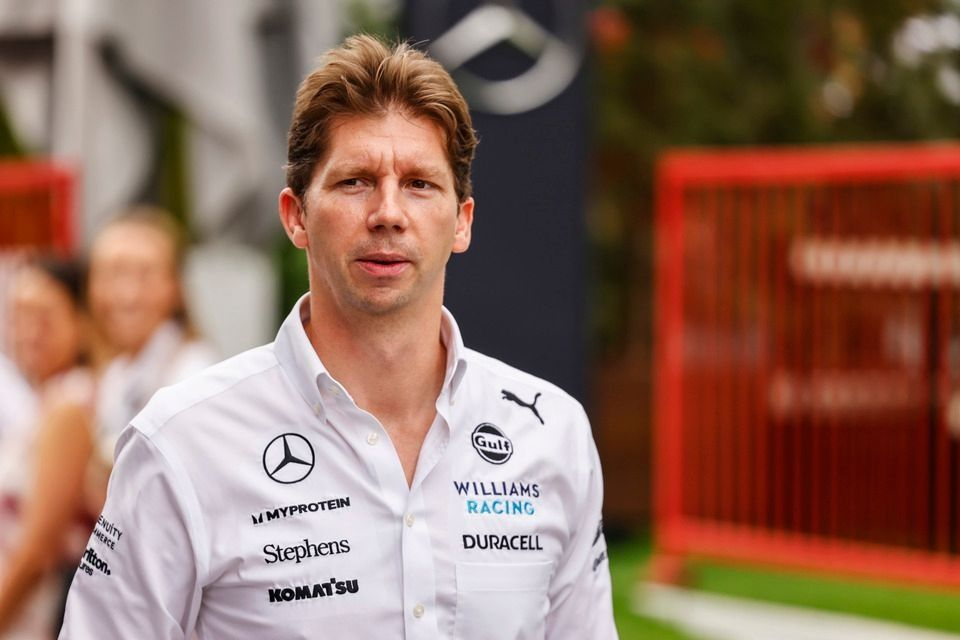

Williams Racing is a historic Formula 1 team founded in 1977 by Sir Frank Williams and Patrick Head. Based in the UK, it quickly rose to prominence in the 1980s and 1990s, winning nine Constructors' Championships and seven Drivers' Championships with legends like Nigel Mansell, Alain Prost, and Damon Hill. Known for its independent spirit and engineering excellence, Williams has faced challenges in recent years but remains one of F1’s most iconic teams.
Carlos Sainz is a Spanish Formula 1 driver currently competing for Williams. As of July 2025, he has 2 career Grand Prix wins, with his first victory at the 2022 British Grand Prix and his second at the 2023 Singapore Grand Prix. Known for his consistency and racecraft, Sainz is widely respected as one of the most reliable drivers on the grid.
Alex Albon is a Thai-British Formula 1 driver currently racing for Williams. He made his F1 debut in 2019 with Toro Rosso and later raced for Red Bull before joining Williams in 2022. Known for his strong racecraft and resilience, Albon has helped Williams improve its competitiveness. As of July 2025, he has 2 career podiums and continues to be a vital part of the team’s development.

The Williams FW47 is the team's 2025 Formula 1 car, powered by a Mercedes hybrid engine and featuring a new rear suspension layout for better aerodynamic efficiency. Driven by Carlos Sainz Jr. and Alex Albon, the car is lighter, more refined, and shows clear progress in performance. Though not yet a front-runner, the FW47 reflects Williams' steady rebuild under Team Principal James Vowles.
James Vowles is the current Team Principal of Williams Racing, having joined in 2023 after years as a top strategist at Mercedes. Under his leadership, Williams has made major strides, improving performance and infrastructure. In 2025, the team sits fifth in the standings, and Vowles recently signed a long-term contract extension to continue leading the rebuild.
